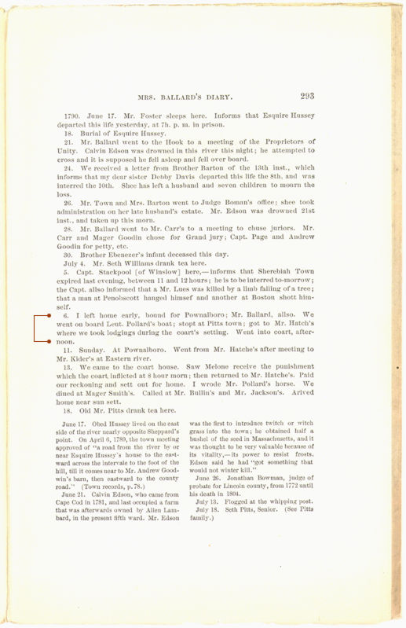

Martha Ballard's Story
Chapter 16
Martha's entries on Rev. Foster appear in a 1904 town history
About one third of Martha's diary appeared in the history of Augusta by Charles Nash, which was printed in 1904, but sat in crates in an old barn, unbound, until 1961. This excerpt shows how Nash cut out the more shocking details Martha recorded. Martha's October 1, 1789 entry about Rebecca Foster swearing a rape against Judge North ("Shocking Indeed.") is included but Judge North's name is blanked out. The longest entry in her diary from December 23, 1789, where she describes what Rebecca Foster told her, has been totally cut. And Martha's account of the 1790 trial in Pownalboro has been whittled down to just the July 6 entry which mentions her trip getting to Pownalboro. Her assesment of the trial and the court's verdict on July 12 do not appear. In his diary abridgement, Nash included Martha's entries on Isaac Foster's controversy with the town. But Martha's description of the North rape trial was totally omitted.
| The official history of Augusta, written by Judge North's grandson, also fails to mention the rape trial. |

| previous |
The verdict of the Supreme Judicial Court | |
| next |
What happened to Isaac and Rebecca Foster after the rape trial? Does Martha's diary give us clues? |
| The History of Augusta Nash, Charles Elventon 1904 |
View Text View Frames version |
|
Page 293 |
||
|
 |
||